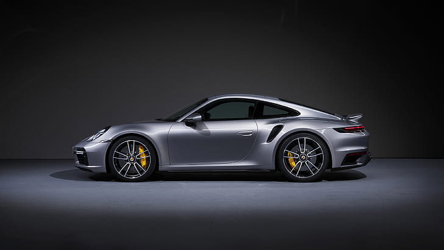
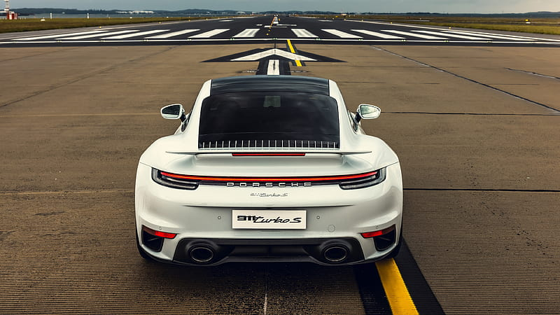

Teto retrátil na versão cabriolet e spoiler variável
Turbocompressores a gás junto do novo sistema de resfriamento por ar de admissão


A PORSCHE sabe o que faz quando o assunto é harmonia, por isso, criamos o 911 Turbo. Um carro superesportivo pronto para correr nas pistas mas apto para uso diário nas ruas. Seguimos um caminho plano mesclando potência e conforto, o melhor para
o seu momento.